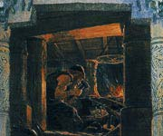

Велунд або Волунд, в скандинавської міфології чудесний бог-коваль, син мореплавця і морської німфи, володар альвов, коханий однією з валькірій. Він прославився як майстер по кольчуг і мечів. Він був талановитим майстром і викував ісландський лабіринт - Будинок Велунд. Міф про Велунд - це драматична історія помсти. Шведський король Нидуд, захопивши коваля в полон, перерізав жили на його ногах і разом з кузнею переніс на віддалений острів.
Бог-коваль помстився королю, убивши двох синів Нидуда, які приїхали подивитися на майстерні вироби полоненого майстра, і надіслав правителю їх голови, прикрашені коштовностями і вставлені в срібло.
За деякими версіями, він ще зґвалтував дочку Нидуда. Згодом Велунд чудесним чином полетів в Вальхаллу, виготовивши, подібно грецькому майстру Дедалу, крила.
Можна провести паралель між кульгавістю Велунд і грецького бога-коваля Гефеста, чиє каліцтво пояснювалося по-різному. За однією версією, він охромел, коли втрутився в сімейну сварку батьків, Зевса і Гери. Роздратований Зевс скинув сина-каліку з Олімпу на острів Лемнос. У другому варіанті йдеться, що Гефест був хром від народження. Цікаво зауважити, що на Лемносе теж розташований діючий вулкан, як і на віддаленому острові, куди був засланий Велунд. У німецькій міфології йому відповідає Віланд.